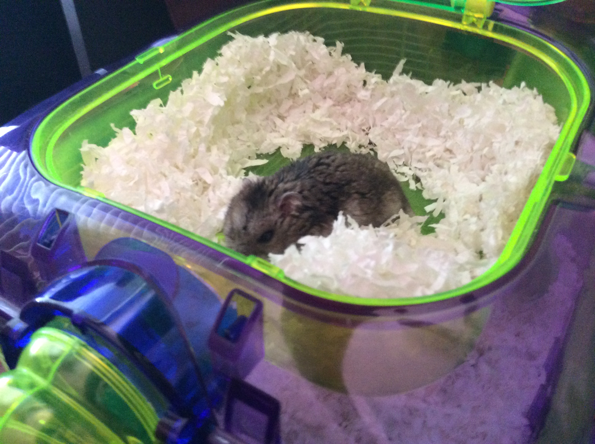

Lab 11: Advanced Block-Level Styling 1
In this lab 11 I'm learning about how to position my elements using sticky, relative, fixed, and absolute and know how they affect my website. The different display properties like inline-block, block, inline, and none to affect how things are displayed and organized. Also adjusting relative sizes minimum and maximum to adjusting sizes when device is smaller to fit perfectly and inlarge when more space.
Challenges
This lab wasn't very challenging I was building off from my last Lab 10 file but adding more css codes and added a sticky to my home page and this lab's CSS code file to always be at the top even while scrolling down like a website menu. Adding a paragraph about some random facts about me to the side using a aside tag with an id to adjust the color and add border.
Problems
I didn't have any problems while working on this Lab 11 everything was simple and the powerpoint was great reference to look at. It was mostly adding few css codes to change my elements to be position, displayed, and setting minimum to get small when viewing this page on a phone and still look good.
Results
As you can see in my Lab 11 you can scroll down and the buton links while always be at the top no matter what and they both work. And there is my random facts about me on the side to read.
